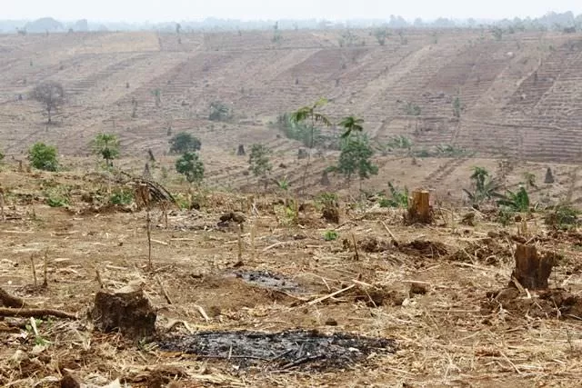
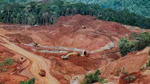
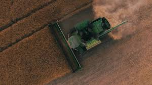
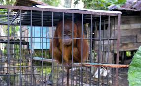

Sumber daya alam adalah salah satu hal penting bagi manusia untuk menjalani keseharian. Sehingga setiap saat ada pengambilan dan pemanfaatan sumber daya alam seperti tanah, mineral hutan, dan energi lainnya yang berkepentingan bagi kita. Tetapi seringkali, pengelolaan SDA tidak seimbang dan dimanfaatkan secara berlebihan. Sehingga banyak lingkungan yang dulunya kaya akan sumber daya menjadi habis dan punah. Eksploitasi ini tidak hanya menyebabkan banyak pemanfaatan SDA tidak berkelanjutan tetapi merusak lingkungan dengan prosesnya. Alam selalu kaya akan sumber daya, tetapi manusia sering memanfaatkannya tanpa memikirkan dampak kedepannya. Menyebabkan banyak lingkunga ekosistem yang rusak tanpa dapat diberbaiki. Jika eksploitasi ini berlanjut tanpa ada aksi peduli terhadap mengembalikan alam, maka dalam waktu dekat kita dapat mengalami kekurangan hal-hal sederhana. Seperti contoh kawasan hutan Indonesia yang sudah gundul akibat pemanfaatan berlebihan oleh masyarakat. Hewan-hewan yang terancam punah akibat kegiatan memburu yang ilegal. Juga contoh, banyak tambang-tambang yang merusak keseluruhan lingkungannya saat proses ekstraknya, menyebabkan ekosistem yang rusak.




Eksploitasi sumber daya: Tambang-tambang yang diekstrak secara berlebihan sehingga seluruh lingkungan sekitarnya rusak, kegundulan hutan akibat dimanfaatkan tanpa upaya mengembalikannya, perburuan dan perdagangan satwa liar, dan juga pertanian intensif.